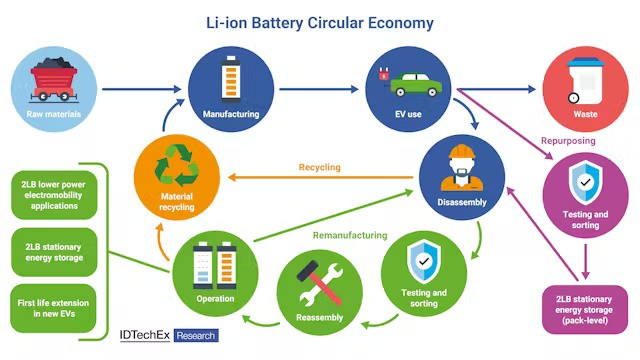
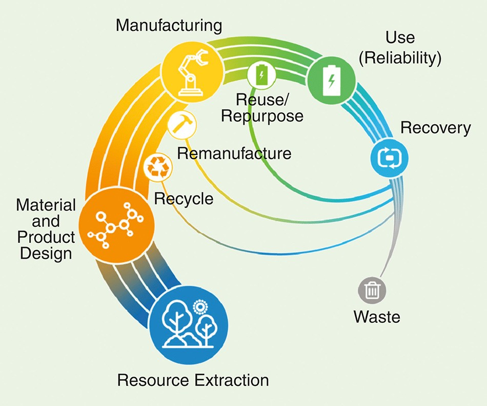

Lithium-ion batteries power our modern world, but what happens when they reach the end of their life in electronics and electric vehicles (EVs)? Discarded batteries pose environmental risks, while valuable resources like lithium and cobalt go to waste. Remanufacturing offers a solution, but significant challenges remain.
The Need for Remanufacturing
As EV adoption soars, so will the number of spent batteries. Recycling these batteries is crucial to conserve resources and minimize environmental impact. Rare earth metals like lithium, cobalt, and nickel are essential for battery production, but mining them can be environmentally destructive. Remanufacturing these materials offers a cleaner and more sustainable alternative.
Challenges on the Road to Sustainability
Despite its potential, remanufacturing faces hurdles. The process is complex, requiring different approaches based on battery type and condition. Standardizing the process is vital for efficient remanufacturing. Additionally, ensuring the safety and performance of remanufactured batteries is critical.
Technological Advancements Offer Hope
Recent years have seen significant progress in battery recycling technology. Techniques for recovering rare metals using chemical and physical separation methods are becoming more efficient. The ability to reuse these materials in new batteries further reduces reliance on mining. Continued research and investment are needed, but these advancements pave the way for a more sustainable future.
The Importance of Rare Metal Recovery
Recovering rare metals like lithium, nickel, and cobalt is central to sustainable battery use. These metals have a limited supply and their extraction has a significant environmental impact. Recycling offers a solution, providing a source of these materials while reducing environmental damage.

Reuse vs. Recycling: Complementary Strategies
"Reuse" and "recycling" are distinct approaches. Reuse involves repurposing used batteries for different applications, such as energy storage systems for EVs. Recycling, on the other hand, breaks down batteries to recover materials for new battery production. Both methods are crucial for maximizing battery lifespans and minimizing waste.
The Road to Commercialization
Several challenges exist on the path to commercializing lithium-ion battery remanufacturing. Streamlining the process, developing economically viable models, and establishing a stable supply of used batteries are key areas of focus. Creating efficient collection systems and consistent regulations are also essential. Market analysis and business model development are crucial to ensure the long-term success of the industry.
Environmental Benefits of Remanufacturing
Remanufacturing offers a significant environmental benefit. By reusing materials, the need for mining rare earth metals is reduced, minimizing environmental damage and resource depletion. However, the recycling process itself needs to be environmentally friendly, requiring energy-saving technologies and minimal harmful emissions. Sustainability must be a core principle throughout the remanufacturing process.

Future Prospects and Innovation
The future of remanufacturing hinges on technological breakthroughs. Improvements in separation technologies and energy-efficient processing methods will enhance efficiency and cost-effectiveness, attracting more companies to the field. The growing popularity of EVs will also provide a steady supply of used batteries. Furthermore, remanufactured materials could be used in new products, solidifying the role of remanufacturing in a sustainable energy future.
The Social Significance of Remanufacturing
Lithium-ion battery remanufacturing is not just a technological challenge, but a socially significant endeavor. By recovering and reusing rare metals, we create a sustainable resource cycle, reducing the risk of depletion and environmental harm. Furthermore, remanufacturing supports the transition to clean energy by providing a solution for used EV batteries. It also has the potential to create new jobs and economic opportunities. Remanufacturing offers a multi-pronged approach to environmental protection, resource sustainability, and economic development.
Building a Sustainable Future
Remanufacturing lithium-ion batteries is a critical step towards a sustainable future. Technological advancements, coupled with a growing social commitment to sustainability, are driving progress in this field. By focusing on efficiency, rare metal recovery, and environmental responsibility, remanufacturing can promote sustainable resource use, environmental protection, and economic development, shaping a brighter future for our planet.